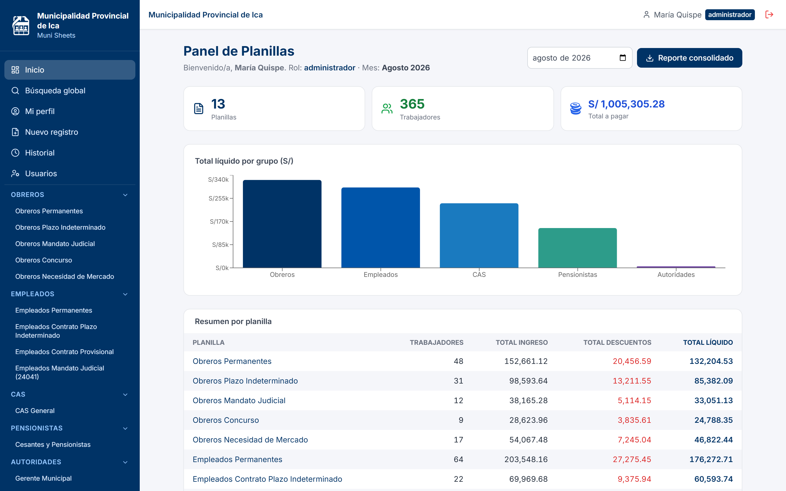
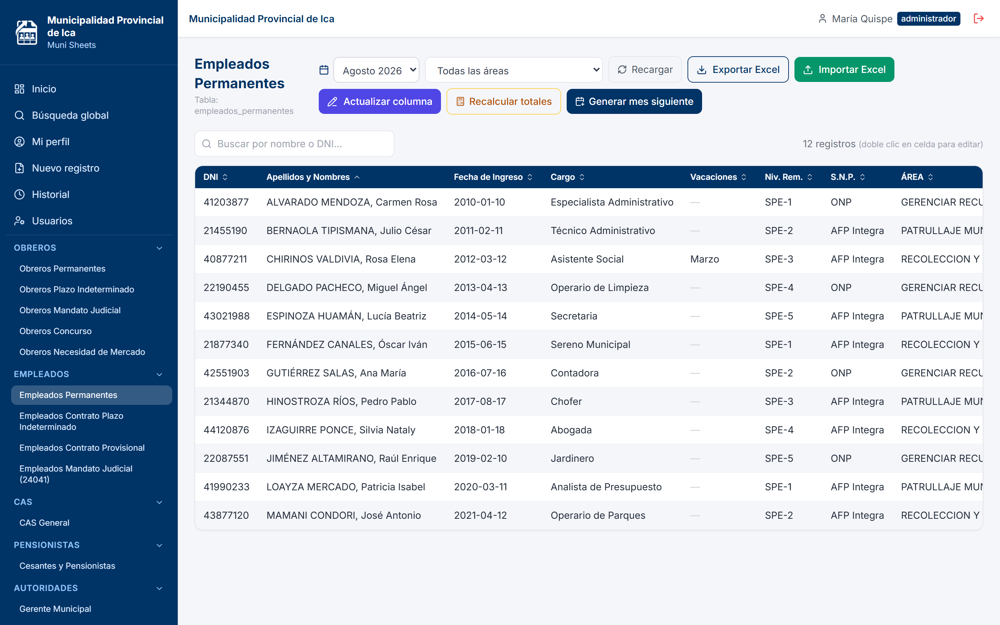
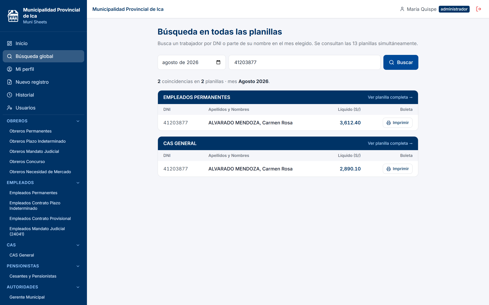
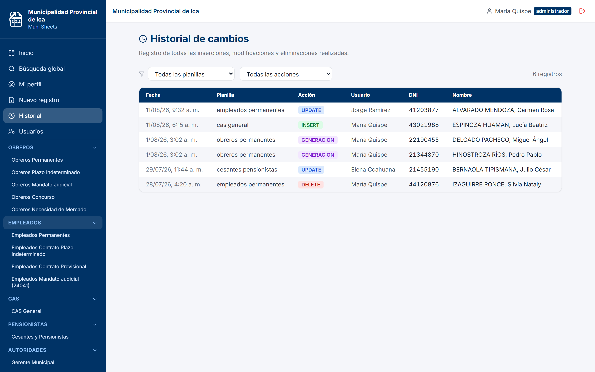
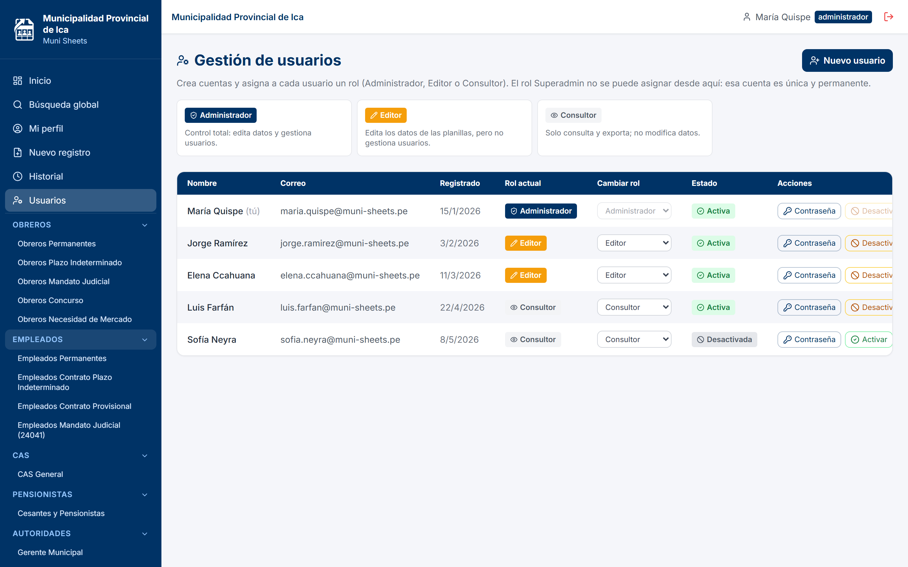

La Municipalidad paga a su personal bajo cinco regímenes laborales distintos, cada uno con sus propios conceptos de ingreso y descuento. Gestionar eso en archivos Excel sueltos genera cinco problemas concretos, todos con costo real.
Un arrastre mal hecho o una celda sobrescrita altera el líquido a pagar sin que nadie lo note hasta que el trabajador reclama. No hay validación ni forma de detectar el descuadre.
Los archivos se copian, se renombran y circulan por correo. Ante una observación de control interno no existe registro de quién modificó un monto ni con qué sustento.
Reconstruir lo que se pagó hace ocho meses implica buscar entre versiones de archivos, sin garantía de que el que se encuentre sea el definitivo.
Nada impide registrar el mismo DNI en dos regímenes el mismo mes. El error se detecta tarde, normalmente cuando el pago ya salió.
Los cuadros presupuestales por área, el aporte a ESSALUD, las relaciones de descuento por entidad y las boletas se rehacen manualmente mes a mes.
Muni Sheets reemplaza los archivos por una aplicación web con base de datos. Cada capacidad descrita aquí está implementada y en funcionamiento.
Capturas tomadas de la aplicación real. Los datos mostrados son ficticios: las planillas contienen información personal de trabajadores que no debe salir de la entidad.




Cuatro mejoras concretas, ordenadas por relación entre esfuerzo e impacto. Las dos primeras se apoyan en información que el sistema ya almacena.
Los niveles de esfuerzo son estimaciones técnicas relativas entre estas cuatro mejoras, no compromisos de plazo.
Los 497 conceptos de las 13 planillas, los 64 cuadros presupuestales y las reglas de cálculo de cada régimen ya están configurados y validados. Ese modelado es la parte costosa de un sistema de planillas, y no hay que volver a hacerla.
El archivo mensual arrancó en junio 2026. Cada mes que se opera dentro del sistema aumenta su valor como respaldo; cada mes que se opera fuera deja un vacío que después no se puede llenar.
Ante una observación, el sistema muestra qué se pagó, quién lo registró y cuándo, con el valor anterior y el nuevo. Es el tipo de respaldo que un archivo Excel no puede ofrecer.
Cuando el cálculo vive en fórmulas de un archivo, se vuelve conocimiento de quien lo armó. Aquí las reglas están en la base de datos y documentadas, y cualquier usuario autorizado opera igual.
Las cuatro del roadmap se apoyan en lo ya construido: la analítica sobre el histórico existente, el envío de boletas sobre la generación de PDF que ya funciona. No requieren rehacer nada.
La inversión de modelar las planillas de la Municipalidad ya está realizada y operando. Lo que queda por decidir no es si construir el sistema, sino cuánto valor extraerle a partir de aquí.
Tres decisiones concretas para avanzar, en orden de prioridad.
| # | Acción | Quién decide | Plazo |
|---|---|---|---|
| 1 | Confirmar la operación íntegra dentro del sistema Establecer que la planilla oficial de cada mes es la del sistema, y no un archivo paralelo. |
Jefatura de RR.HH. | Inmediato |
| 2 | Habilitar el envío digital de boletas Requiere validar el correo de cada trabajador y definir el mes de inicio. |
RR.HH. + Informática | 1 a 2 meses |
| 3 | Priorizar el resto del roadmap Definir si la siguiente inversión va a analítica presupuestal o a la integración con PLAME. |
Gerencia Municipal | 1 trimestre |
Un correo verificado por trabajador para poder entregar la boleta digital.
Necesario para firmar electrónicamente la boleta con validez legal.
Una contraparte en RR.HH. que valide los reportes de cada mes.
Sistema de gestión de planillas de remuneraciones · Oficina de Gestión de Recursos Humanos · Área de Remuneraciones · Municipalidad Provincial de Ica · Agosto 2026